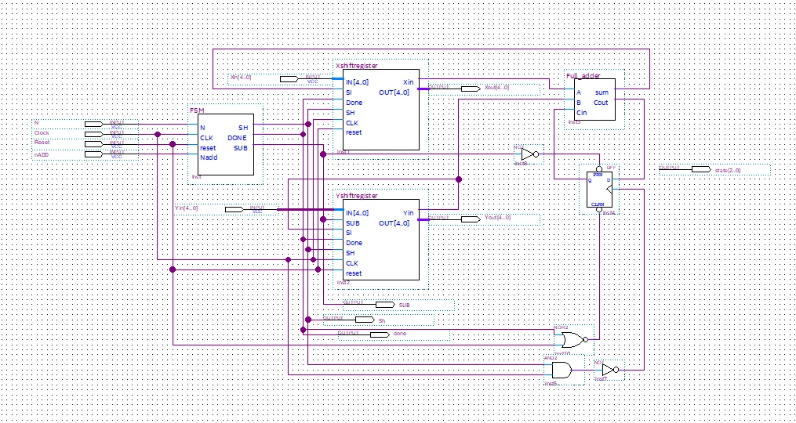
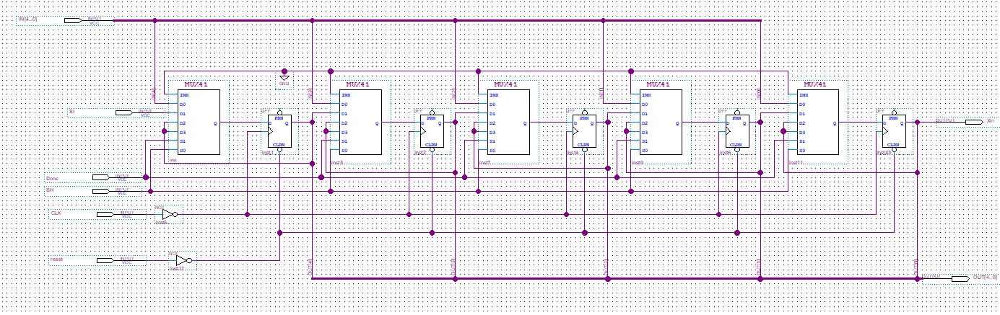
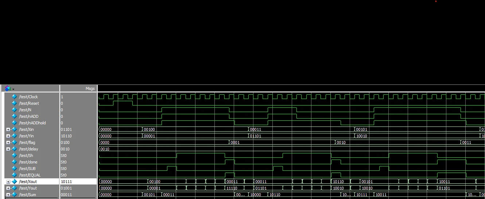

Digital Systems I, RIT
Bit-serial adder/subtractor
A 5-bit arithmetic unit that adds or subtracts one bit per clock cycle, controlled by a finite state machine I designed from a state diagram down to logic gates.


How it works
Instead of adding all five bits at once, the circuit adds one pair of bits per clock cycle and keeps the carry for the next cycle. It has four parts, and everything switches on the falling clock edge, which I got by inverting the clock into each flip-flop.
- Accumulator: a 5-bit shift register that holds the first number and collects the result. A 4-to-1 mux in front of each flip-flop picks between loading a value, shifting in the new sum bit, or holding.
- Y register: the same design with one addition. When subtracting, an XOR gate inverts each bit as it loads.
- Serial adder: a full adder plus a flip-flop that stores the carry. When subtracting, the carry flip-flop is preset to 1, so the inverted bits plus that 1 form the two's complement.
- State machine: decides when to load, shift, and stop.


The state machine
The controller is a Moore machine with eight states. State A waits for the start signal. State B sets subtract mode if requested. States C through G shift once each, exactly five shifts for five bits, so the state machine itself acts as the bit counter. State H raises DONE and holds the answer.
I assigned the states in Gray code, so each step changes only one state bit. That keeps the logic simpler and avoids brief glitches that a binary encoding can cause between states.
| State | Code (y3 y2 y1) |
|---|---|
| A: wait for start | 000 |
| B: set subtract mode | 001 |
| C, D, E, F, G: shift | 011, 010, 110, 111, 101 |
| H: done | 100 |
From the state table I used K-maps to simplify the next-state and output logic. The outputs came out to:
- SH = Y2 + Y3·Y1 (shift during states C to G)
- DONE = Y3·Y2·Y1 (only in state H)
- SUB = nADD·Y3·Y2·Y1 (only in state B, when subtracting)

Testing
I tested each part on its own before putting them together. The accumulator and Y register waveforms showed they reset to 00000, shift on each falling edge, shift in the right bit, and hold their value once DONE goes high.
The full system then ran in ModelSim against a provided reference signal. DONE matched the reference exactly, SH stayed high for exactly five clock cycles, and no glitches appeared.

